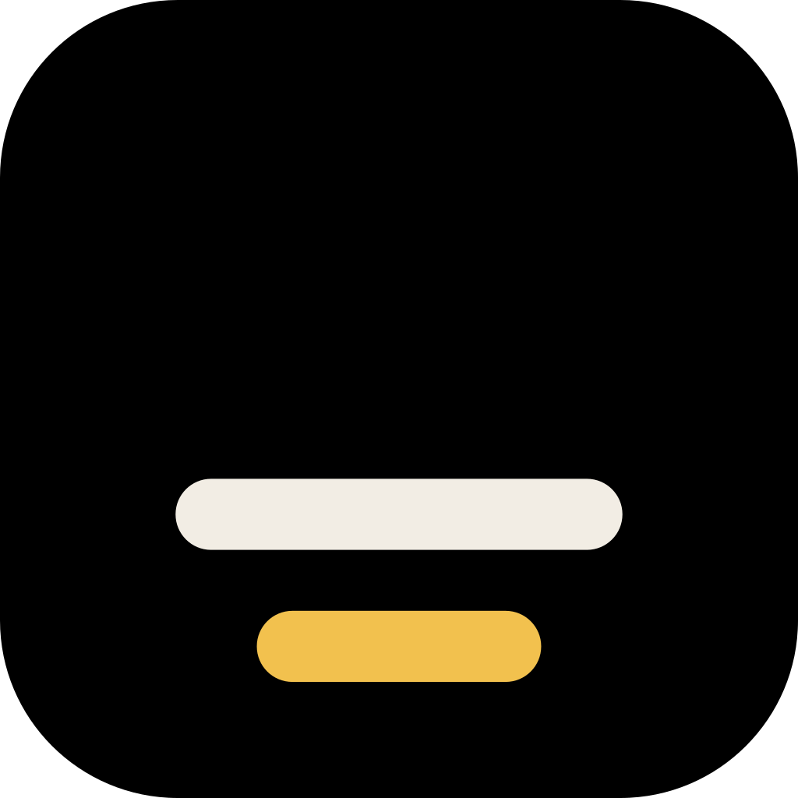
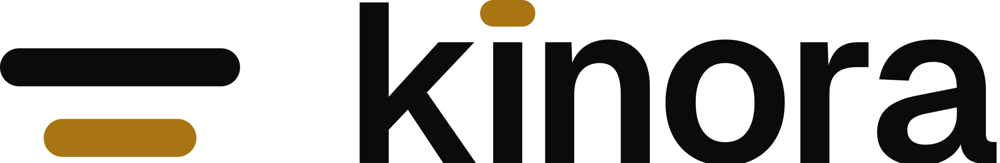
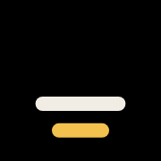
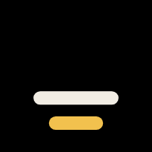
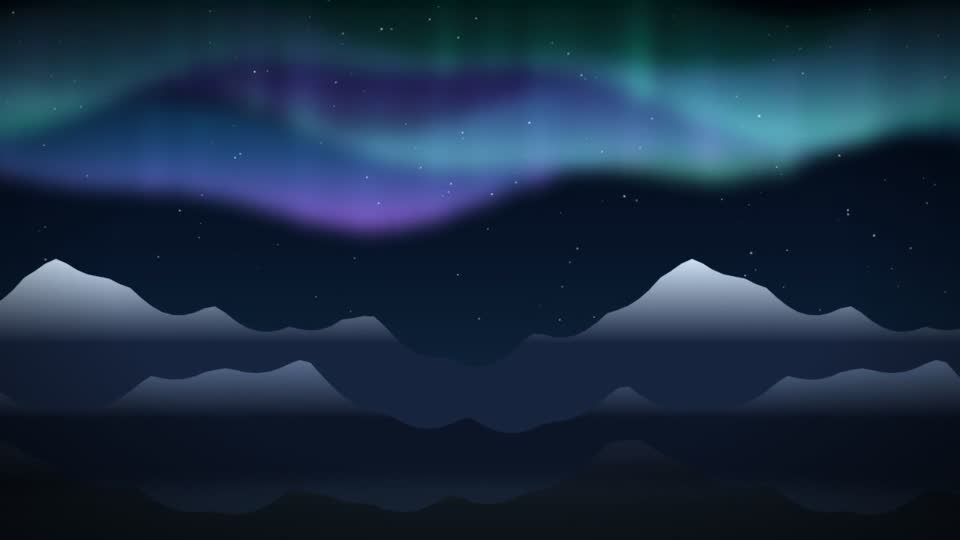
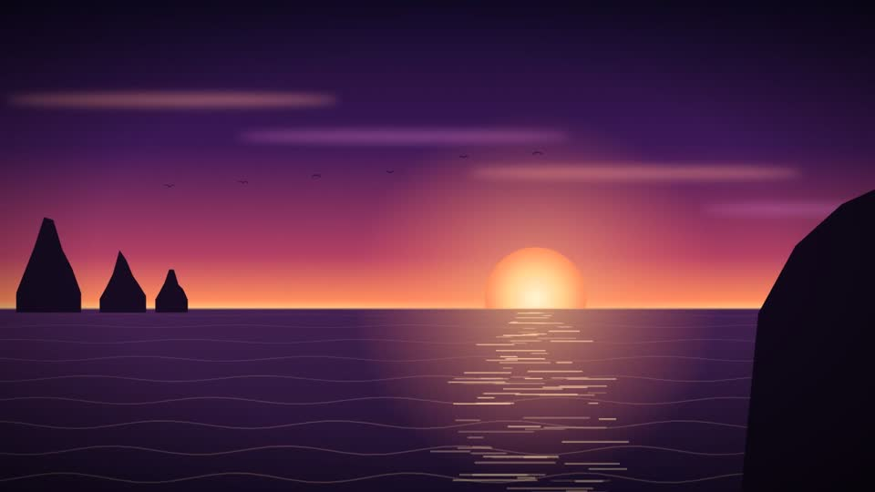
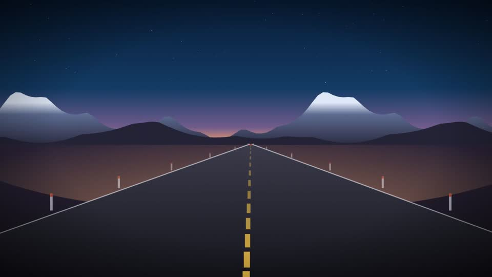

Edit your video by talking to it.
Edit your video by talking to it.Kinora answers in subtitles. The long white line is you. The shorter amber line is Kinora answering. The mark, the colours and the motion all come from that exchange.
Three ways to draw it
All three keep the idea of two subtitle lines. They were drawn at app icon size and at 16 pixels before choosing.

Construction
Drawn on a 64 unit grid. The bars have round ends, so the mark sits comfortably next to Geist.
- Line height7u · radius 3.5u
- White line (you)44u
- Amber line (Kinora)28u · 7/11 of 44
- Gap between lines6u
- Clear space7u on every side
- Smallest mark16px · favicon cut below 24px
- Smallest lockup80px wide
- WordmarkGeist SemiBold, −4%; the dot of the i is a short amber line
Logo set
Use the lockup by default. Use the mark alone where the name is already on screen, like an app icon or a favicon.


App icon and favicon
The tile is projection black with the lines in the lower third. Below 32 pixels the favicon switches to a heavier, centred cut.


Colour
A dark screening room. Amber is not decoration; it is reserved for Kinora's voice and for anything still on trial. Contrast is measured live in this page.
A guide to the mix on a typical screen: mostly black and house, tungsten for type, a little amber.
Type
One family. Geist for everything, Geist Mono only for timecode and amounts, Noto Sans SC for Chinese.
Geist Medium · 60/60 · −3%
Edit your video by talking to it.
Geist Medium · 36/40 · −2.2%
You direct. Kinora does the cutting.
Geist Regular · 18/28
Drop in footage or paste an article and Kinora cuts a first version. Say what to change, point at the picture, and keep only the changes you like.
Geist Mono · 20/28
00:00:03:12 / 00:00:18:00 · $3.17
Noto Sans SC Medium · 36/48
对着视频说，它就替你剪。
Two voices
Everywhere Kinora speaks (the product, the website, a trailer), the same rule holds.

Hold on the aurora a little longer.Trial ready. Keep it or undo it.
- White is youYour words, your bubbles, your framing box.
- Amber is KinoraIts replies, its subtitles, and anything waiting for your yes.
- Subtitles sit on a veilBlack at 72% behind each line, 2 by 12 pixels of padding, never a glow.
- MotionLines draw in from the left on cubic-bezier(0.22, 1, 0.36, 1): white first, amber 380 ms later.
In use
Real footage from the product's demo set; amounts and names are examples.

The editor that listens.

AI generatedEdit your video by talking to it.Your invite to Kinora is ready.
Please don't
Each of these breaks the meaning of the two lines, not only the look.
Files
All in the repository under designs/kinora-dark/brand. The wordmark is outlined, so no font is needed to use it.
- kinora-lockup.svgdark grounds
- kinora-lockup-light.svglight grounds
- kinora-lockup-stacked.svgsquare spaces
- kinora-wordmark.svgname only
- kinora-mark.svgmark, dark grounds
- kinora-mark-light.svgmark, light grounds
- kinora-mark-mono-*.svgone colour
- kinora-mark-favicon.svgheavier cut, small sizes
- kinora-app-icon.svgfull bleed, the platform masks it
- app-icon-1024/512/192/180.pngstores and home screens
- favicon.svg, favicon-32/16.pngbrowser tabs